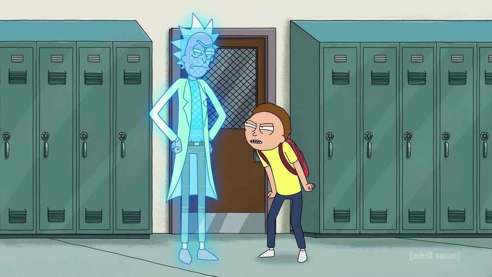
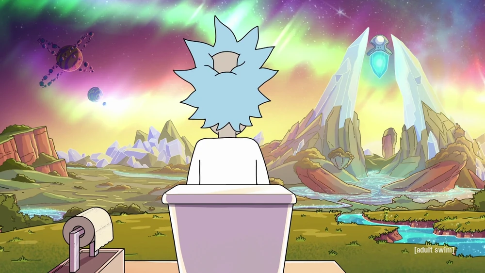
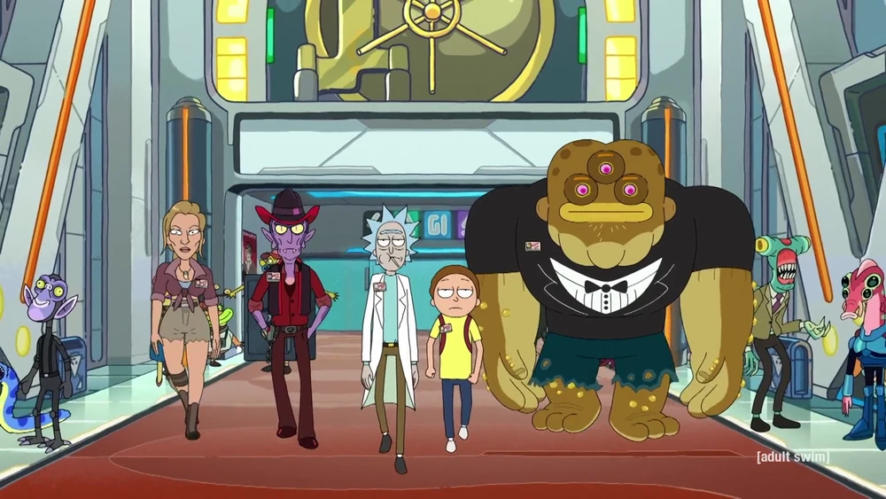
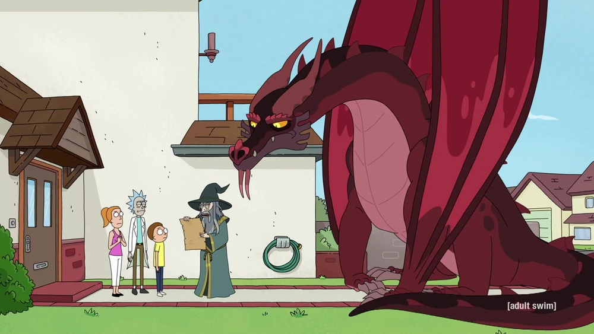
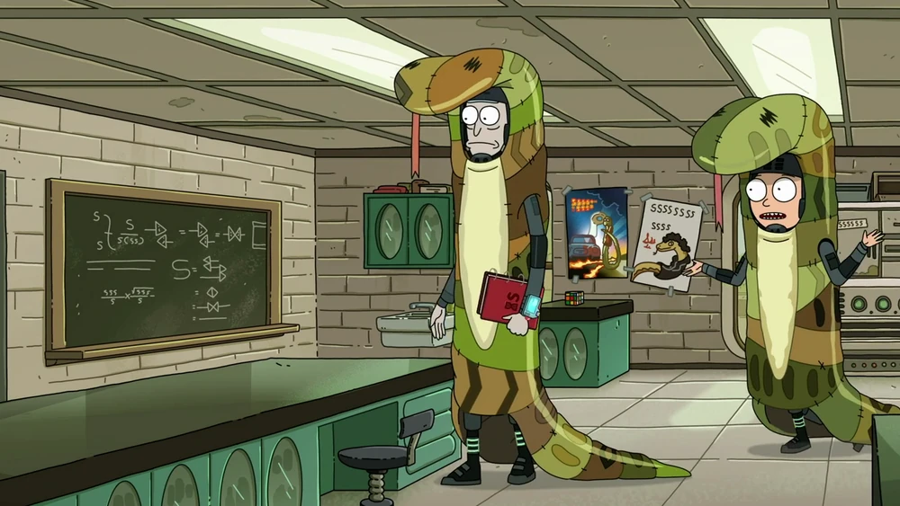
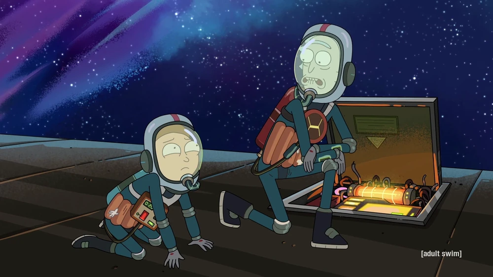
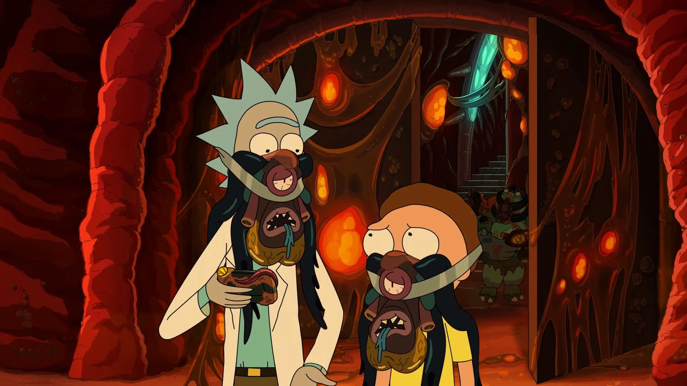
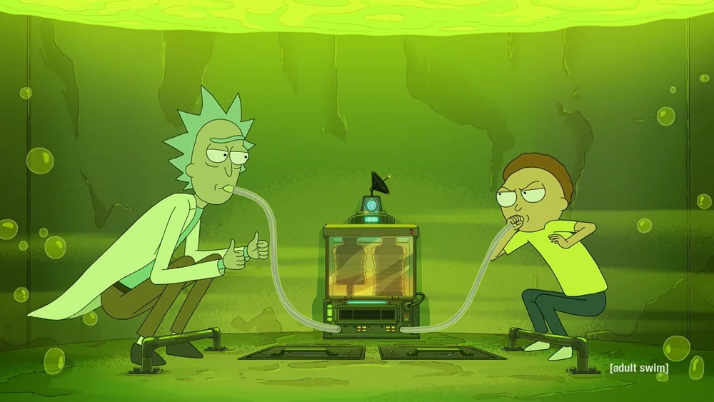
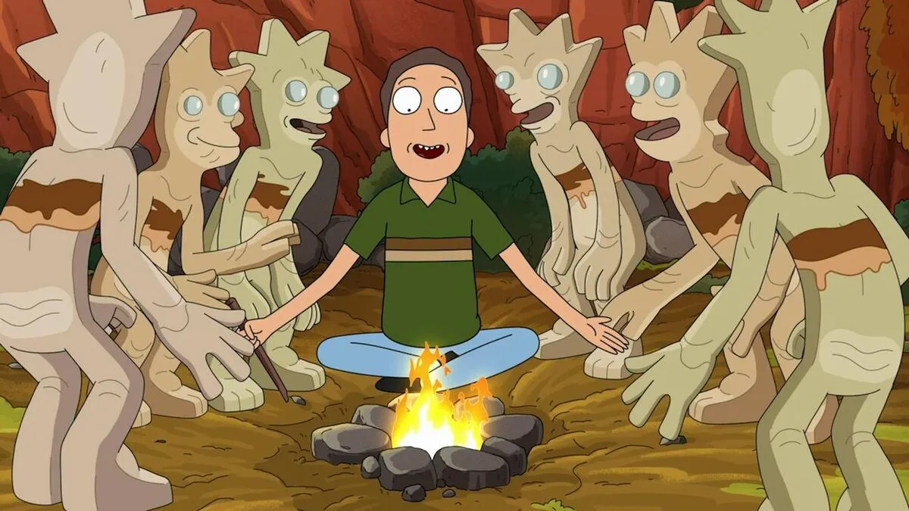

EXPLORAR TEMPORADAS

Morty enlouquece dessa vez, mano. Rick faz coisas.

Todos nós temos uma coisa em comum, broh. Eu não sei mano. Assista a este.

Muitas voltas e mais voltas desta vez, broh. Vista seus capacetes.

Morty recebe um dragão neste, broh. É um passeio selvagem, broh.

Muitas coisas no espaço, broh. Cobras e coisas afiadas. Assista isso, broh.

Um episódio de antologia que segue Rick e Morty em um trem com pessoas que não gostam de Rick.

Rick, Morty e Summer visitam uma civilização alienígena, onde Rick e Morty são controlados por parasitas e Summer vive um estilo de vida luxuoso.

Rick e Morty fazem um acordo quando Rick diz a Morty que se algo der errado, pule no mesmo tanque de ácido que ele.

Rick, Morty, Beth, Summer e Jerry compartilham uma aventura galáctica.
Uma aventura com um cinto de invisibilidade, mas uma família que desaparece junta, deve ficar junta.